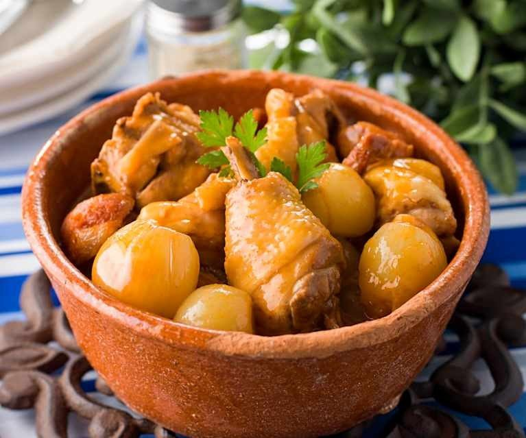

Aves · Frango
Frango na púcara

Ingredientes
- 100 g de presunto cru
- 4 tomates maduros
- 2 dentes de alho descascados
- 1 frango (cerca de 1,8 kg) limpo e cortado em pedaços pelas juntas
- Sal e pimenta-do-reino a gosto
- 10 cebolas bem pequenas inteiras
- 4 colheres (sopa) de manteiga gelada cortada em cubinhos
- ⅓ xícara de vinho do Porto
- ½ xícara de conhaque
- 1 xícara de vinho branco seco
- 2 colheres (sopa) de mostarda
Modo de preparo
- Corte o presunto em cubinhos com cerca de 0,5 cm e ponha-os de molho numa tigelinha com água fria até perderem o sal.
- Enquanto isso, despele os tomates, retire as sementes e corte-os em cubinhos de cerca de 1 cm de lado.
- Preaqueça o forno em temperatura alta (200 °C).
- Utilizando um socador ou um aparelhinho próprio, esmague os dentes de alho.
- Tempere os pedaços de frango com sal e pimenta-do-reino, e distribua numa panela de barro refratário com tampa.
- Ponha na panela os outros ingredientes: o presunto escorrido, o tomate cortado em cubinhos, o alho amassado e as cebolas inteiras.
- Distribua a manteiga sobre os pedaços de frango.
- Regue tudo com o vinho do Porto, o conhaque e o vinho branco.
- Junte a mostarda, tampe bem a panela e leve ao forno preaquecido até o frango ficar cozido e macio (cerca de 1 hora).
- Destampe a panela e leve novamente ao forno até a superfície do frango dourar (cerca de 30 minutos).
- Retire do forno, deixe esfriar e congele.
Observação
Este frango é um clássico da cozinha regional portuguesa; o nome vem do tacho de barro com tampa onde é preparado, chamado de púcara. Congelamento: coloque o frango num recipiente rígido, cubra com filme plástico e leve ao freezer até congelar; retire do recipiente e embale em filme plástico, vede bem, etiquete e congele. Descongelamento: na geladeira de um dia para o outro; aqueça na panela de barro refratário tampada e leve à mesa na mesma panela. Acompanhe com batatas fritas em palitos e arroz.